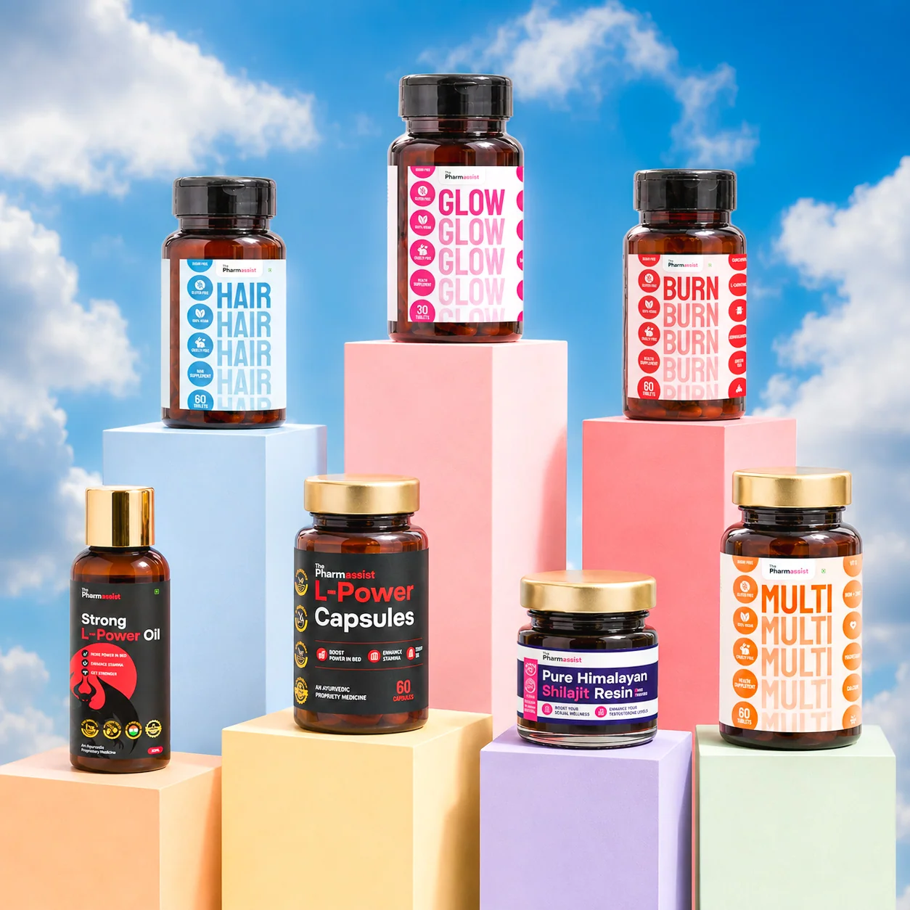
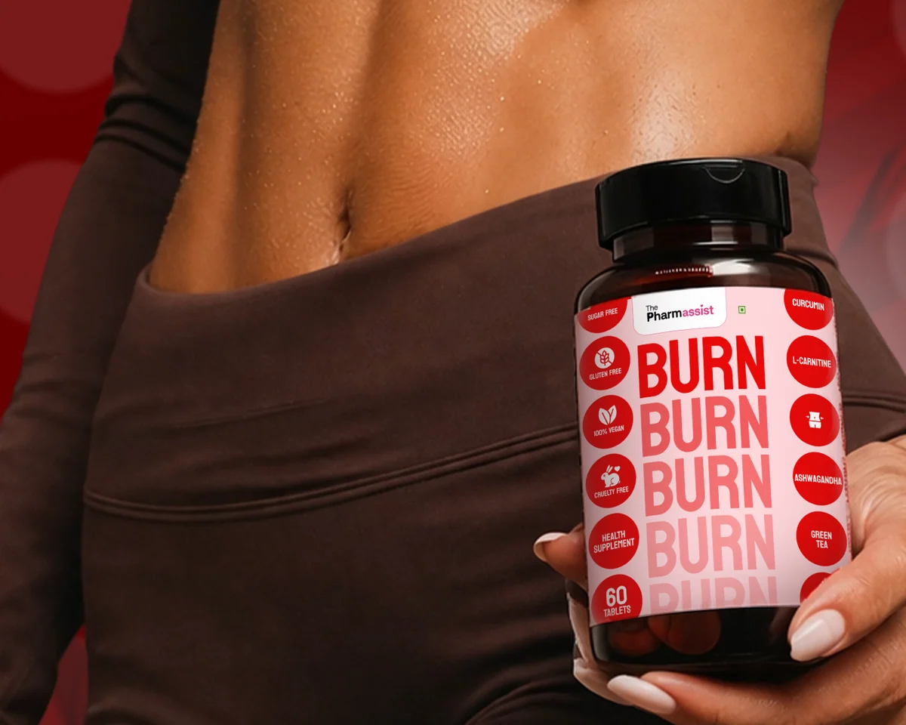
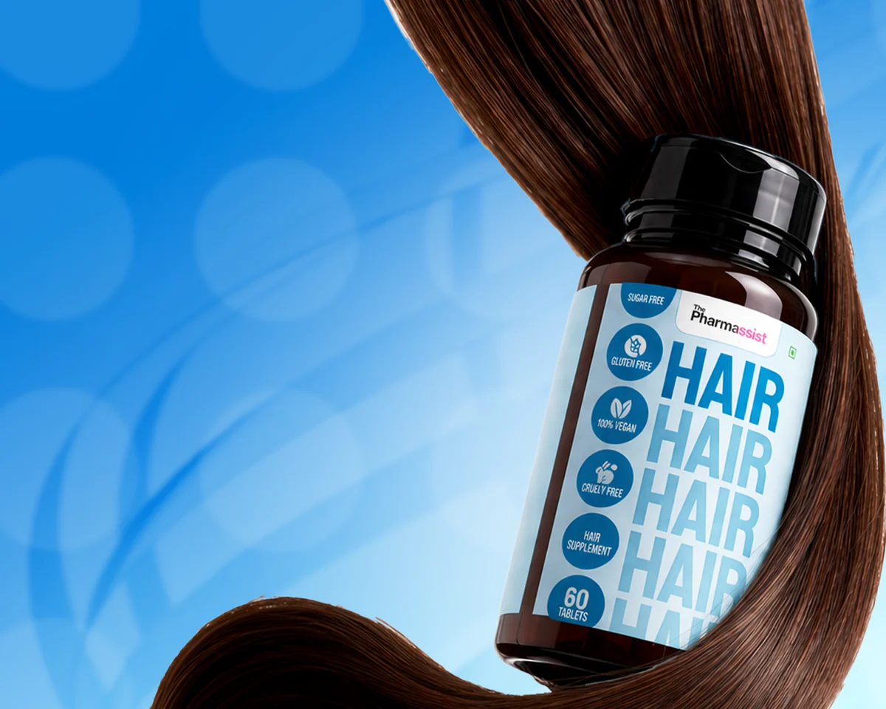
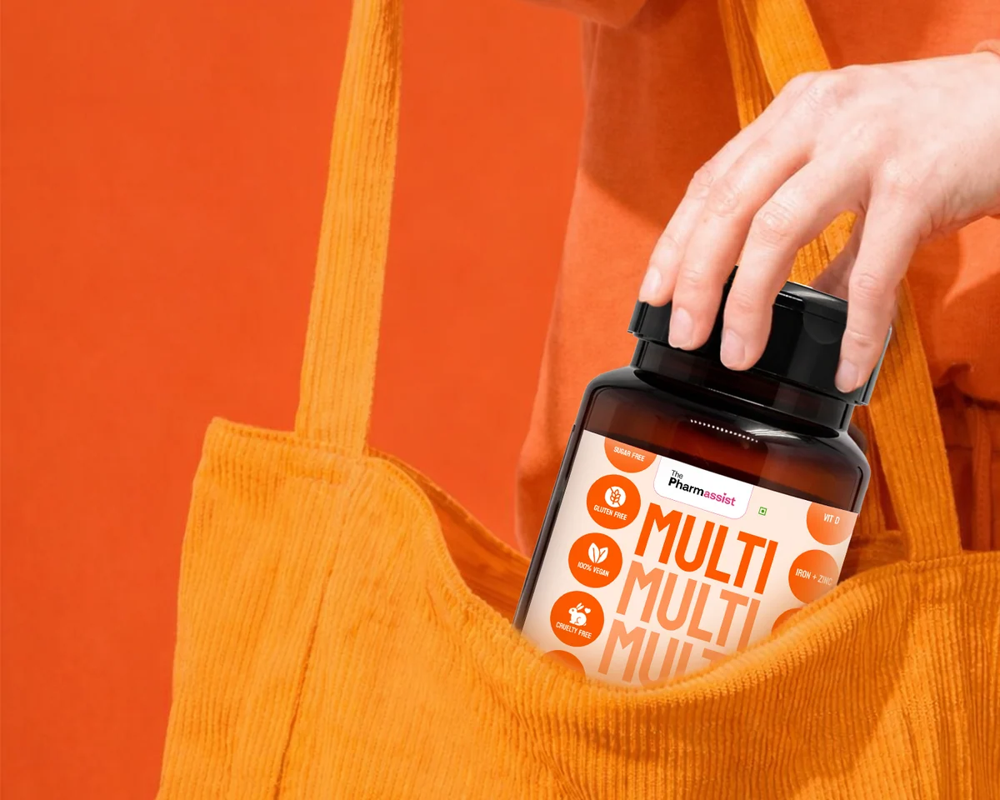

BRAND BUILDING · CONTENT · ACQUISITION
The Pharmassist
Build trust.
Make the brand tangible.
A pharmacist-led brand connecting educational content, founder-led communication and a consumer wellness portfolio.
My scope covered the brand build: positioning, visual identity, product direction, content strategy and the digital experience.

ONE CONNECTED BRAND
Pharmacist-led education creates a natural bridge from learning and trust to product discovery. The work connected what the brand says, how it looks and how people experience it online.



BRAND & FOUNDER CHANNEL SNAPSHOT
Existing portfolio figures; channel totals reflect the brand’s wider work and are not solely attributable to me.
Brand account
Founder account
Strategy & contribution : The Pharmassist
THE BRAND
Pharmacist-led communication, a founder people recognize, and a direct-to-consumer product range.
The Pharmassist presents itself as a pharmacist-led wellness brand. Its website pairs founder-led communication with educational content and a direct-to-consumer store spanning hair, weight management, wellness, energy and vitality products. That gives the brand a natural bridge from learning and trust to product discovery and purchase.
Product categories and founder details are drawn from the brand website. Brand statements about product benefits remain brand claims; this case study does not add medical efficacy or regulatory claims.
THE STRATEGY
Build one connected brand, from pharmacist-led education to product discovery.
The brand brings pharmacist expertise, founder-led communication and a consumer wellness portfolio together under a recognizable identity. The work connects what the brand says, how it looks, what it offers and how people discover it online.
CONTENT & EXECUTION
Real brand and product visuals, with channel examples linked to their source.
The selected product creatives retain their original brand colors and packaging. The linked profiles open the live brand channels.
MY CONTRIBUTION
I built The Pharmassist brand end to end.
My scope covered the full brand build, from content strategy and visual identity to product direction and the digital experience.
THE TAKEAWAY